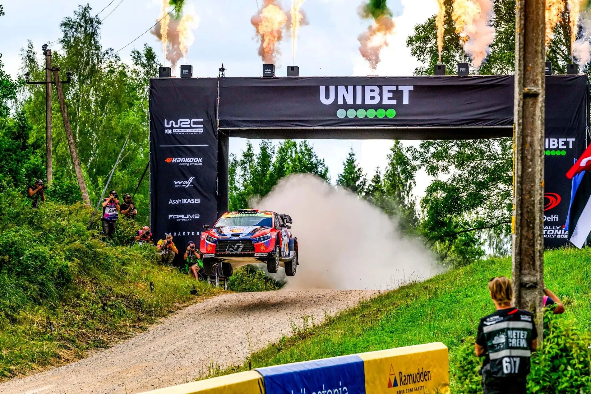
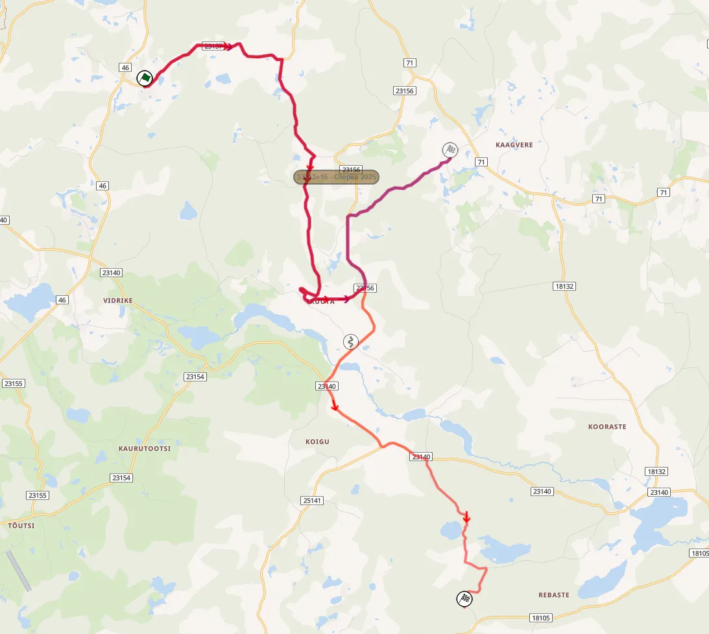

Rally Estonia 2026 - The Stages
Cover and thumbnail: Jaanus Ree / Red Bull Content Pool
Maps: Rally-Maps.com
Rally Estonia features a shorter format, with the rally proper starting on Friday afternoon. The organisers have still managed to exceed the 300 competitive kilometer mark, with mostly identical stages to last year.
Friday
Friday starts with the Shakedown, and then continues on with two runs of three stages in the afternoon. Raanitsa, Kanepi and Karaski all featured on Saturday last year, but this year they're both in on Friday.
Shakedown: Kastre - 4.08km
Stage description: The initial getaway is on tarmac, with the route joining the gravel shortly afterwards. That road is super fast and flowing, consisting of fast and some medium speed corners. At 2.37km there's a junction which leads the crews to a narrower and initially more technical road, which becomes very fast, with a long straight just before the finish. In 2023, Ott Tanak's engine expired on this stage, costing the Estonian a good result at home.
SS1/4 Raanitsa - 21.45km
Stage description: The first part of the stage is generally on fast, medium wide, and flowing roads, including a very fast section from 3.8km to 5km and another one from 6.2km, which includes a big jump at 7km, and another one at 7.62km. Ott Tänak had a massive accident here in 2024 when the event was part of the ERC.
There are a lot of surface changes, from a white-ish gravel to the more usual looser yellowish one, as the route uses a variety of roads in the forest.
After a short tarmac section, the stage becomes wide and very fast, flat out at times, with a big jump at 9.6km. It turns away from that road at 15.3km, and becomes narrow and more technical. There's a very fast passage with 3 jumps, after which the stage exits the forest momentarily. After another jump at 19.4km, the stage becomes slower and technical until the finish.
SS2/5 Karaski - 11.97km
Stage description: The first kilometer of the stage has a series of long medium speed corners, with a sideways jump at 400m. After that it becomes faster, and also wider after a hairpin at 2.3km. A nice open section with crests follows, after which there's a fast tarmac passage. It then turns onto a slightly narrower road, which is still mostly fast, with a few medium speed corners. The end of the stage is on a very narrow and technical road, with the finish being after a junction onto tarmac.
SS3/6 Kanepi - 17.43km
Stage description: The beginning of the stage is on a fast and wide road. Right after the start, there is a slow and technical section that lasts for roughly two kilometers, and rejoins the previous fast road at 3.15km. A fast section with a series of jumps follows, before it turns onto another fast and flowing road with crests, and also ditches on the side of the road. This road is mostly on open spaces, sporadically passing through more forested areas as well.
There is a big jump at 8.9km, and the stage continues to be fast and flowing until 12.3km, after which it turns onto a narrower road via a hairpin. After a series of crests right after the hairpin, it passes through some densely forested areas and is fast, but generally more technical than before, and remains the same until the finish.
Ott Tänak picked up two punctures and retired after going off the road here in 2021.
SSS7 Elva linn - 1.56km
Stage description: It's a super special using roads in the town of Elva. All of the road is on tarmac, with many junctions and straights, with a very long donut round a roundabout just before the finish.
Saturday
Saturday is the longest day of the rally, and features two loops of 2x2 stages. Otepää is the only stage that features significant changes compared to 2025, with a new finish.
SS8/10 Peipsiääre - 24.35km
Stage description: The start of the stage is technical, on a narrow road, with the stage entering a Mickey Mouse arena section in a quarry. There is also a huge man made jump 740m in. Esapekka Lappi had a heavy landing here in 2023 and took out his hybrid unit.
The stage leaves this section, and rejoins a proper road via a big jump at 2km, with a flat out section following, on a medium wide road that narrows when the stage is deep in the forest. At 5.72km there is a 1.5km tarmac section, after which another fast section on a narrow road ensues. It leaves the forest at 11.6km, and there's a short slow technical section afterwards at 14.5km.
There is another 1.5km tarmac section after that, with the stage joining another narrow and fast road, with a man-made jump at 18.7km, that leads the stage to a slower and more technical section. After a junction at 20.4km the stage becomes wider and faster, but it becomes narrower again, with a technical section near the finish, still with a lot of trees alongside the route.
Oliver Solberg broke his suspension and retired from the lead in WRC2 here in 2023.
SS9/11 Mustvee - 11.37km
Stage description: The first few meters of the stage are on a wide and fast road, with the route turning onto a narrower one, with ditches alongside, which is technical and slow at first, before becoming very fast. A junction at 4.7km leads onto a new, similar, road, again fast and medium wide.
After a short tarmac section from 6.4km, there is a high-speed section, with the stage becoming very narrow at 8km, in a densely forested area. A tricky technical section follows, after which it gets faster again.
SS12/14 Kambja - 23.74km
Stage description: The start is on a nice wide and flowing road, that also has crests after a junction at 2.6km. Takamoto Katsuta rolled here in 2022. A short tarmac section later, and the stage joins a medium wide road that is still quite fast and flowing, with consecutive big jumps at about the 7 kilometer mark. The next few kilometers are ever so slightly more technical, with many jumps and crests.
Following a junction at 9.5km, the stage becomes narrower on a road resembling the narrower ones from the previous two stages, still fast, and from 12km it joins a wider and more flowing road. There's a big jump at 13.8km, after which there is a short technical section with junctions and hairpins, with the stage deviating from the 2023 version onwards.
After a short very fast and wide section, the stage joins a narrower road with crests and jumps, which becomes very sandy and technical at about 16km. At parts there's grass growing in the middle of the road. It leaves that road at 19km, and joins a very fast and wide one, which leads onto the route of Neeruti. This road is narrow to its entirety and features a mix of faster and slow sections.
SS13/15 Otepää - 15.16km
Changes compared to 2025: The only stage with significant changes! It features a new finish, which was used in the Antsla Rahvaralli this year. Essentially the 2022 stage with a new finish.

This year's Otepää stage (red) compared to last year's version (purple)
Stage description: The first 2 and a half kilometers are on a fast and wide road that has two big jumps. It then becomes more technical and narrow, still fast, and has a big jump at 3.8km.
After a junction right after that jump, there's a flat out section, with many man-made crests and jumps, with the stage then entering an "arena" section at 6.6km, with jumps and slow corners. After leaving the spectator zone, the stage turns onto a wide road via a junction at 8km, that is flowing, with cambered turns.
A junction at 10km leads the crews onto tarmac for a flat-out blast, before the stage joins a gravel road again at 11.3km. The end of the stage is on a medium wide road, that is more technical and slow. It can get quite rutted, especially on the second pass.
SSS16 Tartu vald - 1.76km
Stage description: The day's final stage is next to the rally's Service Park, at the Majoraadi park. It uses a mix of long medium and slow speed corners, with roads inside the park. There are many rocks placed alongside the route, both to deter cutting, and also to make things more exciting in case someone runs wide. Armin Kremer broke his suspension here in 2023, and Pierre Louis Loubet also damaged his Puma on this stage in 2022.
Sunday
Sunday is the final day of action, and only features two passes of Kääriku, the same Power Stage as last year.
SS19/20 Kääriku - 24.39km
Stage description: Initially, the stage is fast and flowing, with some flat-out stretches on a wide road with crests, that features long, fast corners and also some cambered turns. After a junction at 4.88km a flat-out section follows, again on a wide road.
Following a junction at 8.4km, the stage joins a narrower route which is slower and more technical. At 10.4km there's a series of two jumps, after which it turns onto tarmac.
It then joins another gravel road with a flatout section. The stage becomes more technical as it enters the forest, and also very narrow following a junction at 16.55km.
After a brief stint on a wide road, it again becomes narrow for the next 2.6km, after which it follows a very narrow but fast section, which passes next to Kääriku's sports complex, just before the finish, which is on tarmac.


Comments